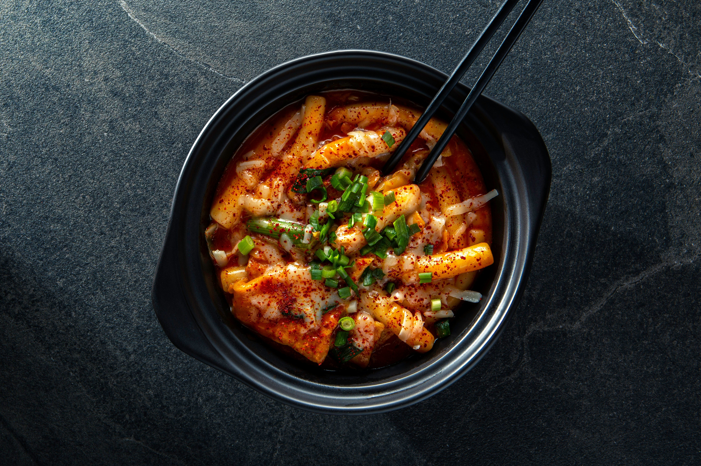

Tteokbokki

Deliciously Easy Tteokbokki Recipe: A Must-Try Korean Favorite!"
Creating this tasty comfort food might take a while, but the results are totally worth it. And it's so easy that even cooking newcomers can whip it up.
Ingredients for Tteokbokki (Serves 2)
Main Ingredients
- 350g Korean rice cakes (Garaetteok)
- 150g Korean fish cakes, rinsed with hot water and cut into bite-size pieces (thinly sliced tofu pieces can be used as a vegan alternative)
- 2 cups anchovy stock, unsalted chicken stock, or water
Tteokbokki Sauce
- 3 tablespoons gochujang (Korean chili paste)
- 1 1/2 tablespoons raw sugar
- 1 tablespoon soy sauce
- 1 teaspoon minced garlic
- 1 teaspoon gochugaru (Korean chili flakes)
Garnish
- 1 teaspoon toasted sesame seeds
- 1 stalk green onion, finely chopped
How to make Tteokbokki
- Prepare the sauce by mixing Gochujang, sugar, soy sauce, garlic, and Gochugaru in a small bowl. If your rice cakes are frozen, soak them in warm water for 10 minutes to thaw before cooking.
- Combine the sauce and rice cakes in a skillet or large pan over medium heat, cover them with stock or water and bring them to a simmer. Stir occasionally to prevent sticking.
- Cook until the rice cakes are tender (not too chewy or hard) and the sauce thickens, this should take about 10 - 15 minutes. Add fish cakes and any other toppings of your choice halfway through cooking. If the rice cake isn't soft enough, just add more water and keep stirring until it gets softer.
- Serve in plates or bowls, garnished with chopped green onions and toasted sesame seeds.
- Optionally, top with grated cheese or serve with kimchi on the side for extra flavor.